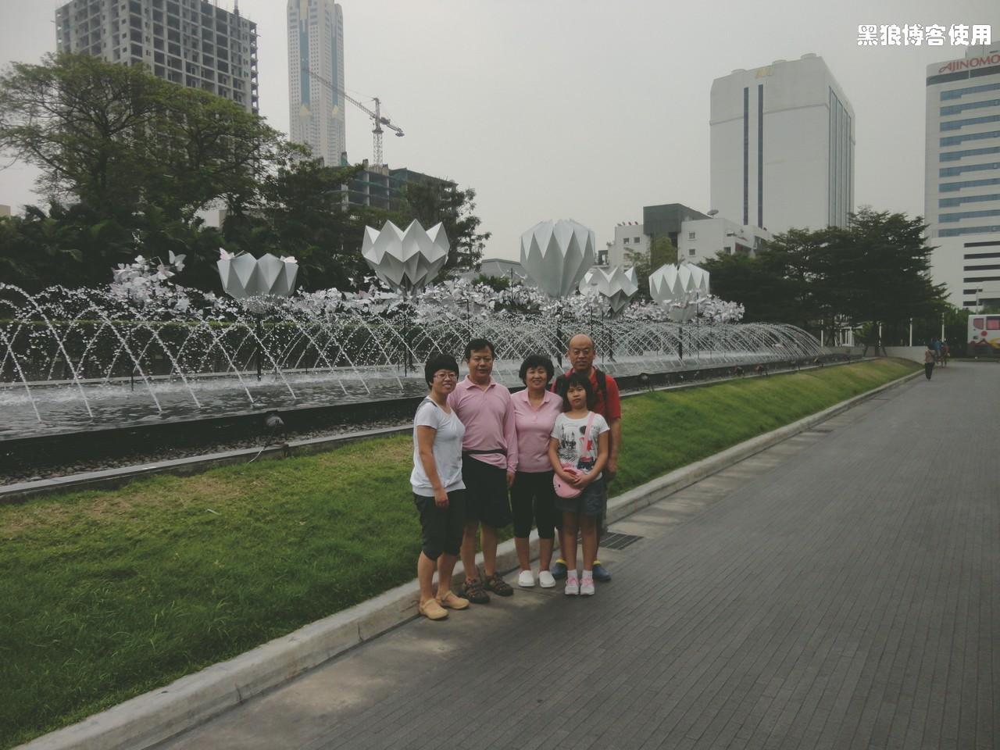
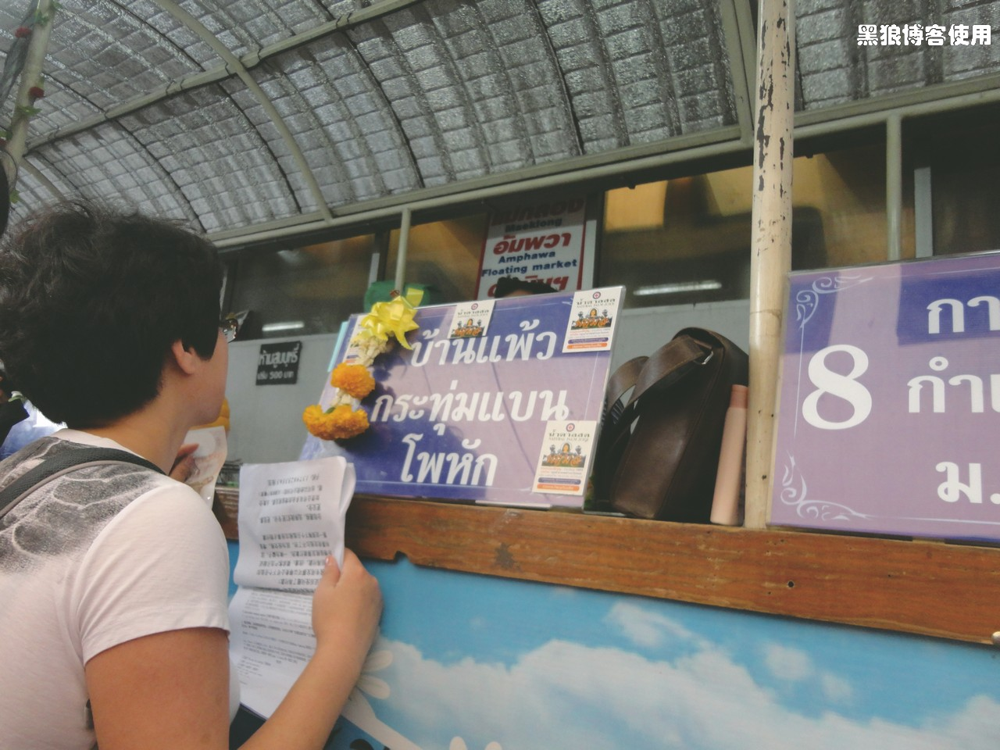
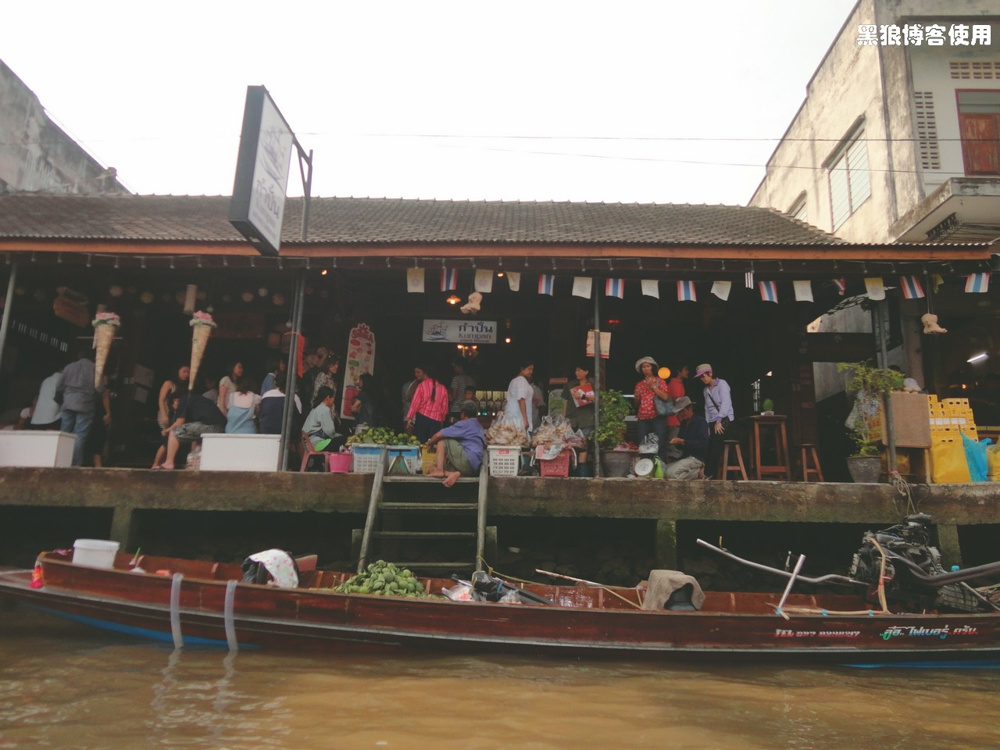
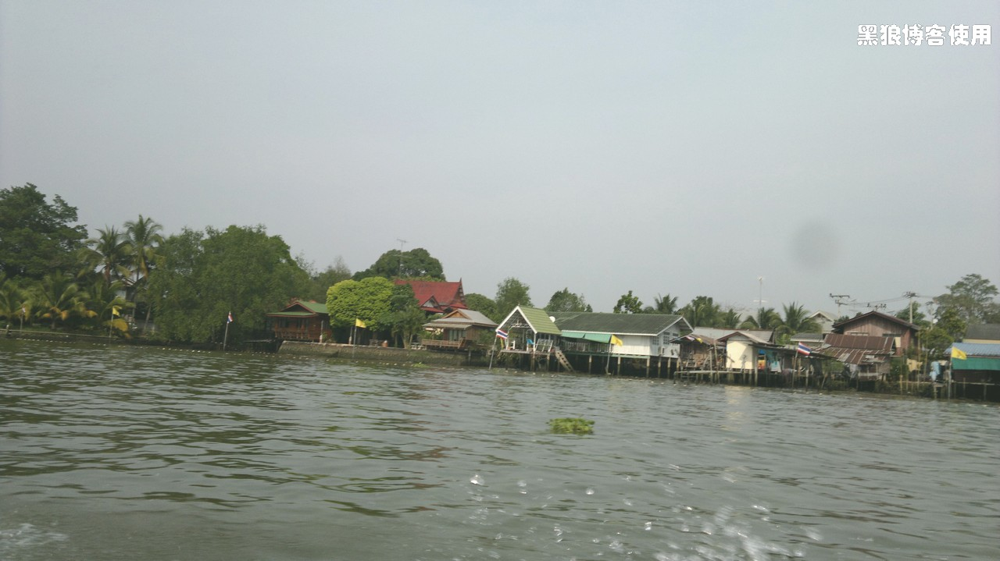
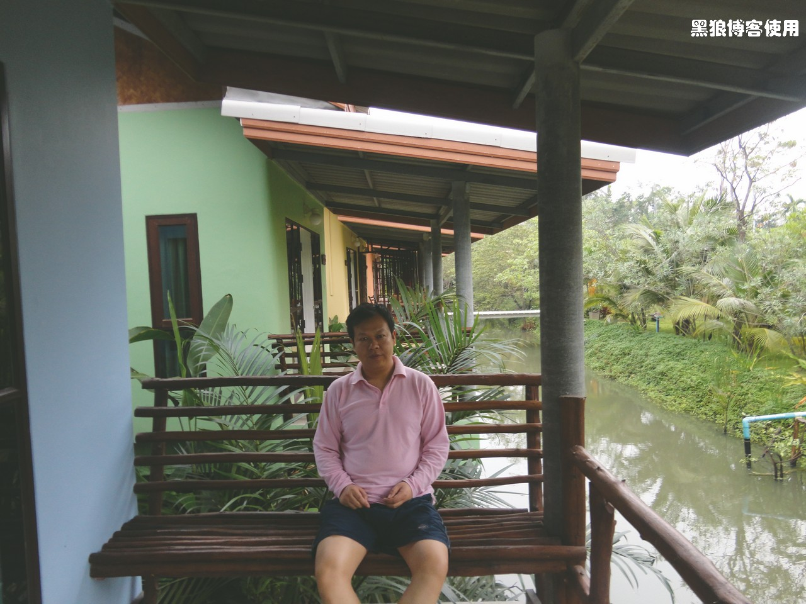
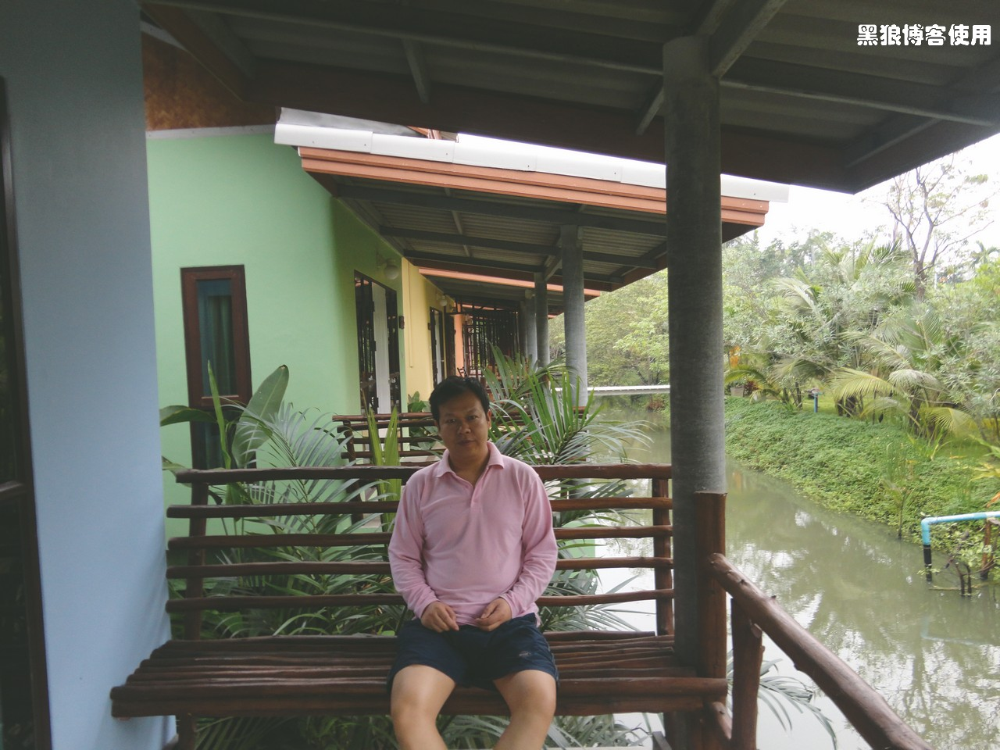

泰国自助游（1）
黑狼语录：
- 新的一年里，少些牢骚、怨言；新的一年里，多些热情、理解；
- 当几个英语二百五碰到一起，必须用英语交流，大家最多的表情是：频频点头
在胡有理的强烈要求下，今年春节期间，又去泰国自助游了一圈。“又”是因为以前跟着旅行团去泰国玩了一次，大约是 2007 年吧，这次老的小的都有，就又选择了泰国。
胡有理很早就开始策划这次自助游，提前两个月就买好了飞机票、预订了宾馆，又在网上看各种旅游攻略、游记。尽管她一再要求我也参与其中，不过，我一直没怎么上心，这不是我喜欢的旅游风格，我更愿意骑着自行车或者背着包四处无目的乱转。胡有理当然很生气，尤其是在我表现出对她的计划不满时，更是令她火冒三丈。总体来说，胡有理的准备还是比较充分的。
2月1 日下午5 点的泰航航班，晚点了一个小时。一上飞机，最高兴的就是小豆包了，她喜欢飞机上的快餐，登机后就两眼放光地等着晚餐。不停的问：什么时候可以吃饭。飞机平稳后，快餐来了，她居然吃的一点不剩，连平时不喜欢的菜叶也吃得一干二净。还冲着空姐说：water。
到泰国曼谷，下飞机已经是当地时间 22 点多了，打车 700BA 到宾馆（120元，被绕路了）。立马体会到英语水平很差了，呵呵。
2 月 2 日一早，吃早餐。
在宾馆楼下吃的快餐，120BA一份的。
大豆包在盯着姥爷盘子里面的美味。
早饭后，先来个合影。
今天的安排是上午休整一下，下午去安帕瓦水上市场。
去安帕瓦要去乘坐 minivan，打车的时候跟司机说了半天，司机仍然迷迷茫茫的，一直觉得是我们的英语不好，几天后才明白，司机应该是在考虑如何绕路呢（泰国出租车比较黑）。地图上距离是不到 5 公里，打车下来居然 117BA，按照出租车上自带的里程价目表，应该至少 20 多公里。
终于找到 minivan， 在 minivan 长途汽车车站等车
老胡在窗口购买汽车票。
坐车去 Amphawa floating market 安帕瓦。
安帕瓦的水上市场别具风格，各种小吃、商品，还有在船上售卖的。

乘船游览安帕瓦，河岸旁都是各式民居。船会停靠在几个寺庙，让游客进去参观。泰国的寺庙太多了，第一天就看的有些审美疲劳。

逛完了水上市场，准备到预订的宾馆休息一下，却发现，订好了 hotel，居然不知道在哪里，拿着酒店的英文名称和地址，居然无人知道。最纠结的就是对方一顿猛点头，我竟然分析不出来他知不知道位置。一个多小时后，好运碰到一个懂英语的哥们，我灵机一动，让他用笔把英文翻译成泰语，此后事情简单多了。泰国人很热情的。
安帕瓦的出租车很少很少，只有那种双条车（后来网上查的名词），开始以为是黑车（安帕瓦应该是个小镇，应该只有这种交通工具，要不，就是乘坐摩的），后来跟当地人用半熟的英语交流，才知道只能乘坐双条车。到宾馆，大约 6 公里，150BA，双条车都是按照人数收的，每个人 30BA。
宾馆是那种家庭式的，环境非常的优美，可惜老板的英语比我还差，很难沟通，连手带脚的比划了半天，终于明白了他要表达的意思，竟然是把我们转到另外一个宾馆。相距大约 2 公里，到了另一个宾馆，也是个家庭式宾馆，花花草草的很精致，女老板英语水平不错，起码我说的她能明白。
 

住在 Amphawa 的类似农家院的 hotel，很干净，很清静，宾馆的风景很不错。小豆包的照片，还有我跟胡有理的合影。
宾馆的早餐味道还不错，而且管饱。
第二天，女老板开车把我们送到了返回曼谷的 minivan 车站，居然还是昨天到处打听宾馆的那个地方。
到了曼谷 minivan 车站，打车居然又被绕了很远，出租费 110BA，让我有些迷茫，曾经一度误以为打车就是这个距离这个价格。
旅游的心情是很不错的，泰国人的热情、平和，让我很受触动，也让我发现自己平时说话的嗓门太大，语气太生硬。尽管泰国的出租车宰客很令人不满意，但除此以外，都令我非常满意。或者说，如果在国内旅游，你也许遍体鳞伤。哈哈，开个玩笑，希望我字里行间的牢骚话不要影响到你，因为它毕竟所占的比重太小太小。